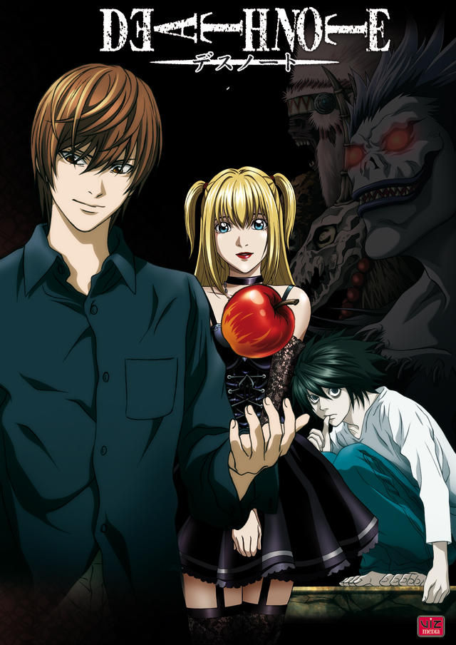
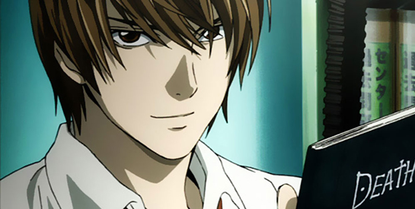
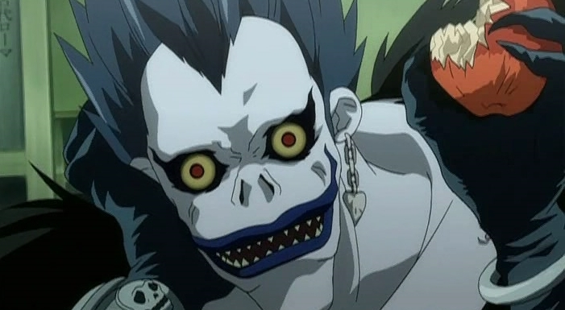
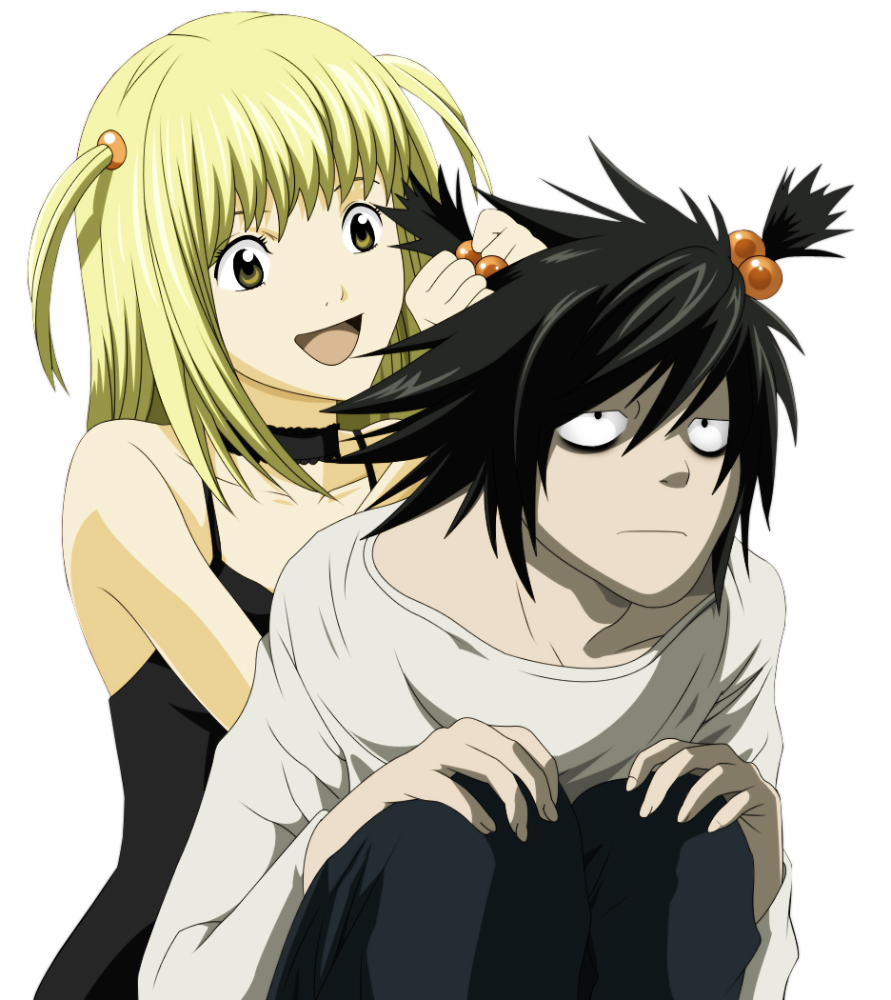
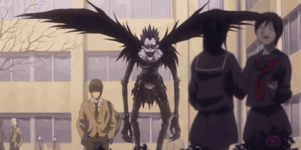
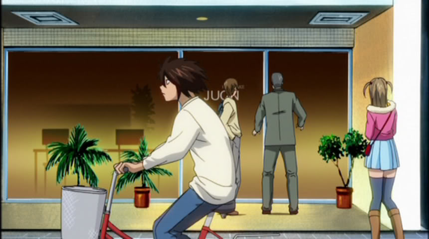

Death Note
Yagami Light es un estudiante aparentemente normal, pero en su fuero interno es un brillante sociópata, sádico y megalómano que detesta el crimen y la maldad que existe en el mundo, y sueña con un entorno utópico libre de tales lacras. Su vida cambia radicalmente cuando encuentra en el suelo un misterioso cuaderno en cuya portada se lee DEATH NOTE (Cuaderno de muerte). Dentro del cuaderno hay instrucciones sobre su uso, donde destaca el hecho de poder matar a una persona (siempre y cuando se conozca el rostro de ella) de un ataque al corazón 40 segundos déspues de escribir el nombre de aquella persona en la Death Note. Light se mantiene escéptico de la autenticidad del cuaderno, pero después de probarlo en dos ocasiones, se da cuenta que su poder es real. Pasados algunos días lo visita un shinigami llamado Ryuk. Los shinigamis son seres de otra dimensión que usan los Death Note para matar personas y así prolongar su propia existencia. Ryuk le explica a Light que el Death Note que encontró le pertenece, pero cuando se extravia, automáticamente pasa a ser posesión de la persona que la encuentre, hasta que ésta última muera. A su vez Light le cuenta a Ryuk que su objetivo es matar a los criminales, para así limpiar al mundo de la maldad y convertirse en el dios de un mundo nuevo, libre de crimen.
    